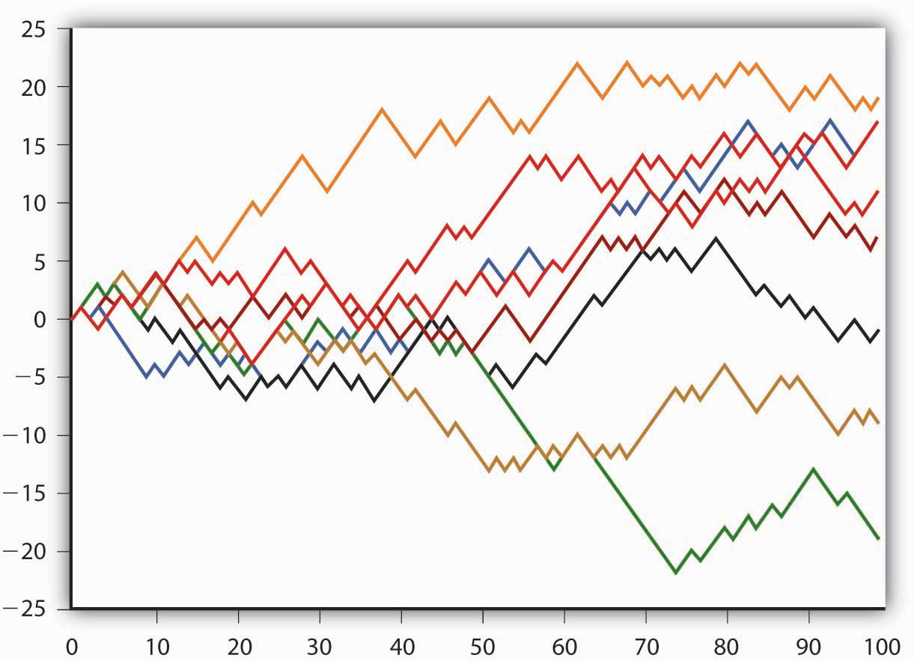
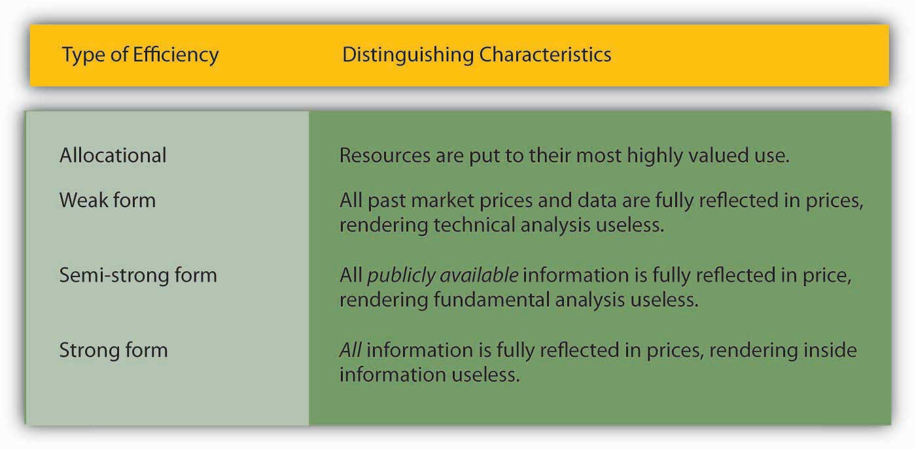

By the end of this chapter, students should be able to:
Market volatilityIn this context, frequent changes in securities prices., the constantly changing prices of financial instruments,www.cboe.com/micro/vix/introduction.aspx tricks some people into thinking that financial markets, especially stock markets, are flim-flams or gigantic roulette wheels. Stock prices, they suspect, are at best random and at worst rigged. In fact, financial markets are typically more efficient, and hence fairer, than other markets. The direction of price movements (up or down) is indeed random, but price levels are usually based on the rational expectationsAn economic theory that posits that market participants, in this case investors, input all available relevant information into the best forecasting model available. of a large number of market participants. While financial scams certainly exist, the stock and bond markets are not rigged. Except perhaps for some penny stocks, securities prices are usually based on economic fundamentalsKey variables in the pricing of assets. They include expected inflation, interest, default, and earnings rates. and are not systematically manipulated by insiders or conspirators. Investing in corporate equities certainly entails risk, but it is not akin to playing the lottery. Luck can play a role in investing, as in anything in life, but unlike a Powerball drawing, Lady Luck is not the whole of the game by a long shot. Far from being gamblers, investorsParticipants in financial markets; purchasers of financial securities. are switches in the most advanced computing devices in the history of the world, financial markets. Prices in those markets help to determine what gets made and what doesn’t, how much gets produced and how, and where and how those goods are sold.
Financial markets, in the world’s most economically advanced countries anyway, have been rational and efficient decision-making machines for several centuries. In 1688, a broker in Amsterdam, Netherlands, named Joseph de la Vega, left posterity with vivid descriptions of the Dutch securities market.en.wikipedia.org/wiki/Joseph_Penso The market, he claimed, was just a game of misinformation and spin management that pitted bulls (those who profited from an increase in prices) against bears (those who profited from a decrease in prices):
“The bulls are like the giraffe which is scared by nothing. . . . They love everything, they praise everything, they exaggerate everything. . . . The bulls make the public believe that their tricks signify wealth and that crops grow on graves. When attacked by serpents, they . . . regard them as both a delicate and a delicious meal. . . . They are not impressed by a fire nor perturbed by a debacle. . . . The bears, on the contrary, are completely ruled by fear, trepidation, and nervousness. Rabbits become elephants, brawls in a tavern become rebellions, faint shadows appear to them as signs of chaos. . . . What is there miraculous about the likelihood that every dwarf will become a giant in the eyes of the bears?”Joseph de la Vega, Confusion de Confusiones.
Joseph de la Vega went on to detail a dozen different ways in which cabals of bears and herds of bulls tried to influence securities prices. The net effect of such machinations, though, was unclear. Sometimes the bulls won, sometimes the bears won, but their activities often canceled each other out. “Numerous brokers are inexhaustible in inventing involved maneuvers,” de la Vega explained, “but for just this reason do not achieve their purposes.” Systematic manipulation of the market was impossible because the bulls and bears competed against each other, each tugging at the price, but ultimately in vain. Also, as rational investors learned the tricks of trading, they came to expect hyperbole, false rumors, sham sales, and the like. So, in the final analysis, market fundamentals, not the whims of nefarious individuals, determined prices. Exactly the same could be said of most of today’s securities markets. Generally speaking, stock and other securities prices fluctuate due to genuine changes in supply or demand, not because of the machinations of bulls and bears.
Joseph de la Vega’s 300+-year-old description of what was then the world’s most advanced securities market also made clear that expectations, rather than actualities, moved prices. “The expectation of an event,” he noted, “creates a much deeper impression upon the exchange than the event itself.” As noted in the preceding chapters, expectations are still paramount today. People invest based on what they believe the future will bring, not on what the present brings or the past has wrought, though they often look to the present and past (sometimes even the distant past) for clues about the future.
Rational expectations theory posits that investor expectations will be the best guess of the future using all available information. Expectations do not have to be correct to be rational; they just have to make logical sense given what is known at any particular moment. An expectation would be irrational if it did not logically follow from what is known or if it ignored available information. For the former reason, investors expend considerable sums on schooling, books, lectures, seminars, and the like, to learn the best ways to reason correctly given certain types of information. (This textbook and course are a good start, but competition for the best modelIn this context, a theory about the most accurate way to price securities or to estimate the value of future variables such as interest rates, risk, earnings, and other fundamentals. is keen. Investment models and strategies constantly morph, adapting to changes in the real world.) For the latter reason, investors update their expectations, or forecasts, with great frequency, as new information becomes available, which occurs basically 24/7/365.
If everyone’s expectations are rational, then why don’t investors agree on how much assets are worth? One investor may think goldAt one time, gold was money, that is, the unit of account against which the value of all goods was measured. It is now just a precious metal that trades on world markets like other commodities, its price rising and falling with shifts in supply and demand. a steal at $900/ounce, while another wouldn’t touch the stuff for a penny over $750. One investor might think $943.40 just right for a zero coupon bondA discount bond that pays no coupon or interest. The interest is earned by the difference between the bond”s face or par value and the price at which it is sold., but another might think it a good deal only at $942.51. One may think that XYZ stock is overpriced at $22.57 a share, while another would buy a small quantity of it at that price, and yet another would buy all she could at that price. Such differences in valuation are important because they allow trades to occur by inducing some investors to sell and others to buy.
As it turns out, investors sometimes have different sets of information available to them. Some investors may have inside informationInformation relevant to the valuation of stock or other security and known only to a small group of people., news that is unknown outside a small circle. Others may lack certain types of information because they think it is too costly to obtain. Other times, investors think of the information they know in common differently because their utility functions (their goals and aspirations, if you will) differ. So they have different time horizons, different holding periods, and different sensitivities to risk.
At yet other times, investors use different valuation modelsTheories of securities prices and their determinants., different theories of how to predict fundamentals most accurately and how those fundamentals determine securities prices. For example, some investors foresee long causal chains more clearly than other investors do. Recall from Chapter 5 "The Economics of Interest-Rate Fluctuations" that the demand for asset X is partly a function of its expected return relative to all assets not-X. So investors must consider information directly related to asset X and all other assets. A new piece of information half a world away that alters expectations about a nation’s ability to repay its debts, a sector’s future prospects, or a single company’s profits regularly ripples through the entire financial world. Ripple indeed evokes the right metaphor. Like throwing a pebble into a pond, the disruption is greatest at the epicenter, the spot where the rock hits the water, but it dissipates over time and space. The bigger the pebble (the bigger the news), the bigger the splash and the larger and longer lasting the disruption. Most days, the world’s financial pond is pelted with millions of little pebbles, little pieces of news that cause prices to jiggle up and down. Every now and again, a big stone, even a boulder, hits the pond, causing significant price changes throughout the pond for quite a long time. (Economists call such boulders shocks, and they include financial crises like that of 2007–2008. Financial crises almost always follow asset bubblesIn this context, a rapid increase in asset prices that is not easily justified by fundamentals like expected earnings, interest rates, and the like., which we will discuss in more detail below.)
Some investors understand the effect of some ripples more quickly and clearly than others. This shouldn’t be taken to mean that some investors are smarter than others, only that they understand the types of ripples particular pebbles will make better than others do. The roles could reverse with the next pebble, with the next bit of news. Moreover, investors constantly strive to improve their understanding of the ways that certain types of news affect securities prices. They emulate successful people and develop new models and theories of their own, not for the joy of learning but for the clink of cold hard cash. For example, investors who understood that oil prices hitting $50 per barrel would increase the share price of home insulation manufacturers merely stayed up with the crowd. It’s pretty obvious that higher home heating costs would induce people to buy insulation. The investors who quickly figured out that the share price of a Canadian shingle manufacturer would jump too were the ones that earned above-market returns. (High oil prices made it profitable to extract oil from Canada’s oil sand fields, but not enough people lived in the area around Fort McMurray, Alberta, to meet labor demands. People flocking to the region to work needed new homes, the roofs of which needed shingles, lots of them. www.npr.org/templates/story/story.php?storyId=6098557)
For all those reasons, investors often have a wide variety of opinions about the value of different assets. More mechanically, investors might have different opinions about bond valuations because they must have different views about the applicable discount or interest rate. To review,
If this is a one-year zero coupon bond, FV = $1,000, and i = 6%, then the bond price = ($1,000/1.06) = $943.40. But if one believes i = 6.01, then the bond price = ($1,000/1.0601) = $942.51. To understand how investors can value the same stock differently, we must investigate how they value corporate equities.
A corporate equity, or stock, is sometimes called a share because it is just that, a share in the ownership of a joint-stock corporation. Ownership entitles investors to a say in how the corporation is run. Today that usually means one vote per share in corporate elections for the board of directors, a group of people who direct, oversee, and monitor the corporation’s professional managers. Ownership also means that investors are residual claimants, entitling them to a proportionate share of the corporation’s net earnings (profits), its cash flows, and its assets once all other claims against it have been settled.
In exchange for their investment, stockholdersOwners of corporate equities. Generally, they are entitled to one vote per share in corporate elections for directors and a proportionate share of the corporation’s profits. may receive a flow of cash payments, usually made quarterly, called dividendsIn this context, cash distributions of corporate earnings to shareholders.. Dividends differ from bond coupons in important ways. Unlike coupons, they are not fixed. They may go up or down over time. Also, if a company fails to pay dividends on its stock, it is not considered in default. (We speak here of common stock. Another type of financial instrument, a preferred share [preference shares in the United Kingdom], promises to pay a fixed dividend. Such instruments are a type of equity-debt hybrid and are priced more like coupon bonds.) In fact, many corporations today do not pay any dividends, and for good reasons. Small, rapidly growing companies, it is widely believed, should plow their profits back into their businesses rather than return money to shareholders. That is not cheating the stockholders, because profits left with the company instead of paid out as dividends raise the share price. The company has more cash than it otherwise would, after all, and stockholders own the profits whether they are left with the company or put into their pockets. Plus, it is generally thought that growing companies put the money to more profitable use than stockholders could.
There is a tax benefit to retaining earnings, too. Taxes on dividends, which the Internal Revenue Service (IRS)The tax collector of the U.S. federal government. considers income, are usually higher than taxes on share appreciation, which the IRS considers capital gains.www.irs.gov/ Also, dividends are taxed in the year they are paid, which may be inconvenient for stockholders, but capital gains taxes are incurred only when the stockholders sell their shares, so they have more control over their tax liabilities. Similarly, companies that have stopped growing will sometimes buy their own stock in the market rather than pay dividends. Fewer shares outstanding means that each share is worth more (the price per share equals the total value of the company divided by the number of shares, so as the denominator declines, the price per share increases), so stockholders are “paid” with a higher stock price. Nevertheless, some corporations continue to pay dividends. The point here is that what really matters when valuing corporate equities is earnings or profits because, as noted above, they belong to the stockholders whether they are divided, kept as cash, or used to repurchase shares.
The simplest stock valuation method, the one-period valuation model, simply calculates the discounted present value of dividends and selling price over a one-year holding period:
where:
P = price now
E = yearly dividends
k = required rate of return
P₁ = expected price at year’s end
So if a company is expected to pay no dividends, its share price is expected to be $75 at the end of the year, and the required rate of return (or k)Serves the same purpose as i in present value calculations. In other words, it measures the opportunity cost of making an investment; k is influenced by i but also by default and other risks. (a sort of risk-adjusted interest rate) on investments in its risk class is 10 percent, an investor would buy the stock if its market price was at or below P = 0/1.10 + 75/1.10 = $68.18. Another investor might also require a 10 percent return but think the stock will be worth $104 at the end of the year. He’d pay P = 0/1.10 + 104/1.1 = $94.55 for the stock today! A third investor might agree with the first that the stock will be worth $75 in a year, but she might need a 12 percent return. She’d pay only up to P = 0/1.12 + 75/1.12 = $66.96 per share. Yet another investor might also require a 12 percent return to hold the stock and think $75 a reasonable price a year from now, but he might also think earnings of $1 per share is in the offing. He’d pay P = 1/1.12 + 75/1.12 = .89 + 66.96 = $67.85 per share.
For longer holding periods, one can use the generalized dividend valuation model, which discounts expected future earnings to their present value. That can be done mechanically, as we did for coupon bonds in Chapter 4 "Interest Rates", or with a little fancier math:
That sideways 8 means infinity. So this equation basically says that the price of a share now is the sum (σ) of the discounted present values of the expected earnings between now and infinity. The neat thing about this equation is that the expected future sales price of the stock drops out of the equation because the present value of any sum at any decent required rate of return quickly becomes negligible. (For example, the present value of an asset expected to be worth $10 in 20 years at 15 percent interest is only PV = 10/(1.15)20 = $0.61 today.) So for all intents and purposes in this model, called the Gordon Growth model, a corporate equity is worth the discounted present value of its expected future earnings stream.
where
P= price today
E = most recent earnings
k = required return
g = constant growth rate
So the price of a stock today that recently earned $1 per share and has expected earnings growth of 5 percent would be $21.00 if the required return was 10 percent (P = 1.05/.05). If another investor estimates either k or g differently, perhaps because he knows more (or less) about a country, industry, or company’s future prospects, P will of course change, perhaps radically. For a little practice, complete the following exercises now.
Use the one-period valuation model P = E/(1 + k) + P1/(1 + k) to price the following stocks (remember to decimalize percentages).
| Dividends (E = $) | Required return (k = %) | Expected price next year (P1 = $) | Answer: price today (P = $) |
|---|---|---|---|
| 1.00 | 10 | 20 | 19.10 |
| 1.00 | 15 | 20 | 18.26 |
| 1.00 | 20 | 20 | 17.50 |
| 0 | 5 | 20 | 19.05 |
| 0 | 5 | 30 | 28.57 |
| 0 | 5 | 40 | 38.10 |
| 1.00 | 10 | 50 | 46.36 |
| 1.50 | 10 | 50 | 46.82 |
| 2.00 | 10 | 50 | 47.27 |
| 0 | 10 | 1 | 0.91 |
Use the Gordon growth model P = E × (1 + g)/(k − g) to value the following stocks (remember to decimalize percentages).
| Earnings (E = $) | Required return (k = %) | Expected earnings growth rate (g = %) | Answer: price today (P = $) |
|---|---|---|---|
| 1 | 10 | 5 | 20.00 |
| 1 | 15 | 5 | 10.00 |
| 1 | 20 | 5 | 6.67 |
| 1 | 10 | 5 | 20.00 |
| 2 | 10 | 5 | 40.00 |
| 3 | 10 | 5 | 60.00 |
| 1 | 30 | 5 | 4.00 |
| 1 | 30 | 10 | 10.00 |
| 1 | 30 | 15 | 20.00 |
| 100 | 20 | 10 | 1,000.00 |
Stock prices plummeted after the terrorist attacks on 9/11. Use the Gordon growth model to explain why.
Stock prices plummeted after 9/11 because risks increased, raising k, and because expectations of corporate profits dropped, decreasing g. So the numerator of the Gordon growth model decreased and the denominator increased, both of which caused P to decrease.
Now here is the freaky thing. While at any given moment, most investors’ valuations are wrong (too low or too high), the market’s valuation, given the information available at that moment, is always correct, though in a tautological or circular way only. You may recall from your principles course that markets “discover” prices and quantities. If the market price of anything differs from the equilibrium price (where the supply and demand curves intersect), market participants will bid the market price up or down until equilibrium is achieved. In other words, a good, including a financial security, is worth precisely what the market says it is worth.
At any given time, some people expect the future market price of an asset will move higher or that it is currently underpriced, a value or bargain, so to speak. They want to buy. Others believe it will move lower, that it is currently overpriced. They want to sell. Sometimes the buyers are right and sometimes the sellers are, but that is beside the point, at least from the viewpoint of economic efficiency. The key is that the investor who values the asset most highly will come to own it because he’ll be willing to pay the most for it. Financial markets are therefore allocationally efficient. In other words, where free markets reign, assets are put to their most highly valued use, even if most market participants don’t know what that use or value is. That’s really remarkable when you think about it and goes a long way to explaining why many economists grow hot under the collar when governments create barriers that restrict information flows or asset transfers.
Financial markets are also efficient in the sense of being highly integrated. In other words, prices of similar securities track each other closely over time and prices of the same security trading in different markets are identical, or nearly so. Were they not, arbitrage, or the riskless profit opportunity that arises when the same security at the same time has different prices in different markets, would take place. By buying in the low market and immediately selling in the high market, an investor could make easy money. Unsurprisingly, as soon as an arbitrage opportunity appears, it is immediately exploited until it is no longer profitable. (Buying in the low market raises the price there, while selling in the high market decreases the price there.) Therefore, only slight price differences that do not exceed transaction costs (brokerage fees, bid-ask spreads, etc.) persist.
The size of those price differences and the speed with which arbitrage opportunities are closed depend on the available technology. Today, institutional investors can complete international financial market trades in just seconds and for just a few hundredths or even thousandths of a percent. In the early nineteenth century, U.S.-London arbitrageurs (investors who engage in arbitrage) confronted lags of several weeks and transaction costs of several percent. Little wonder that price differentials were larger and more persistent in the early nineteenth century. But the early markets were still rational because they were as efficient as they could be at the time. (Perhaps in the future, new technology will make seconds and hundredths of a percent look pitifully archaic.)
Arbitrage, or the lack thereof, has been the source of numerous jokes and gags, including a two-part episode of the 1990s comedy sitcom Seinfeld. In the episodes, Cosmo Kramer and his rotund friend Newman (the postal worker) decide to try to arbitrage the deposit on cans and bottles of soda, which is 5 cents in New York, where Seinfeld and his goofy friends live, and 10 cents in Michigan. The two friends load up Newman’s postal truck with cans and head west, only to discover that the transaction costs (fuel, tolls, hotels, and what not) are too high, especially given the fact that Kramer is easily sidetracked.en.wikipedia.org/wiki/The_Bottle_Deposit,_Part_1 High transaction costs also explain why people don’t arbitrage the international price differentials of Big Macs and many other physical things.www.economist.com/markets/Bigmac/Index.cfm Online sites like eBay, however, have recently made arbitrage in nonperishables more possible than ever by greatly reducing transaction costs.
In another joke (at least I hope it’s a joke!), two economics professors think they see an arbitrage opportunity in wheat. After carefully studying all the transaction costs—freight, insurance, brokerage, weighing fees, foreign exchange volatility, weight lost in transit, even the interest on money over the expected shipping time—they conclude that they can make a bundle buying low in Chicago and selling high in London. They go for it, but when the wheat arrives in London, they learn that a British ton (long ton, or 2,240 pounds) and a U.S. ton (short ton, or 2,000 pounds) are not the same thing. The price of wheat only appeared to be lower in Chicago because a smaller quantity was being priced.
Some economists believe financial markets are so efficient that unexploited profit opportunities like arbitrage are virtually impossible. Such extreme views have also become the butt of jokes, like the one where a young, untenured assistant professor of economics bends over to pick up a $20 bill off the sidewalk, only to be chided by an older, ostensibly wiser, and indubitably tenured colleague who advises him that if the object on the ground were real money, somebody else would have already have picked it up.robotics.caltech.edu/~mason/ramblings/efficientSidewalkTheory.html; www.indexuniverse.com/sections/research/123.html But we all know that money is sometimes lost and that somebody else is lucky enough to pocket it. At the same time, however, some people stick their hands into toilets to retrieve authentic-looking $20 bills, so we also know that things are not always what they seem. Arbitrage and other unexploited profit opportunities are not unicorns. They do exist on occasion. But especially in financial markets, they are so fleeting that they might best be compared to kaons or baryons, rare and short-lived subatomic particles.
In an efficient market, all unexploited profit opportunities, not just arbitrage opportunities, will be eliminated as quickly as the current technology set allows. Say, for example, the rate of return on a stock is 10 percent but the optimal forecast or best guess rate of return, due to a change in information or in a valuation model, was 15 percent. Investors would quickly bid up the price of the stock, thereby reducing its return. Remember that R = (C + Pt1 – Pt0)/Pt0. As Pt0 , the price now, increases, R must decrease. Conversely, if the rate of return on a stock is currently 10 percent but the optimal forecast rate of return dropped to 5 percent, investors would sell the stock until its price decreased enough to increase the return to 10 percent. In other words, in an efficient market, the optimal forecast return and the current equilibrium return are one and the same.
Financial market efficiency means that it is difficult or impossible to earn abnormally high returns at any given level of risk. (Remember, returns increase with risk.) Yes, an investor who invests 100 percent in hedge fundsA type of relatively unregulated mutual fund that engages in sophisticated trading strategies. Only wealthy individuals and institutional investors are allowed to invest directly in such funds. will likely garner a higher return than one who buys only short-dated Treasury notes. Holding risk (and liquidity) constant, though, returns should be the same, especially over long periods. In fact, creating a stock portfolio by throwing darts at a dartboard covered with ticker symbols returns as much, on average, as the choices of experienced stock pickers choosing from the same set of companies. Chimpanzees and orangutans have also done as well as the darts and the experts. Many studies have shown that actively managed mutual funds do not systematically outperform (provide higher returns than) the market. In any given period, some funds beat the market handily, but others lag it considerably. Over time, some stellar performers turn into dogs, and vice versa. (That is why regulators force financial firms to remind investors that past performance is not a guarantee of future returns.)
That is not to say, however, that you shouldn’t invest in mutual funds. In fact, mutual funds are much less risky (have lower return variability) than individual stocks or any set of stocks you are likely to pick on your own. Portfolio diversificationEntails investing in a relatively large number of issuers within an asset class, such as buying the shares of hundreds of corporations rather than just one or a few in order to reduce return risk. Some of the investments will go sour, others will flourish, and most will fall in between., the investment strategy often described as not putting all of your eggs (money) in one basket (asset), is a crucial concept. So-called indexed mutual funds provide diversification by passively or automatically buying a broad sample of stocks in a particular market (e.g., the Dow or NASDAQ) and almost invariably charge investors relatively low fees.
Sectoral asset allocationEntails investing in a variety of different asset classes (e.g., some bonds, some stocks, and some commodities) consistent with the investor’s goals and lifecycle stage. is another important concept for investors. A basic strategy is to invest heavily in stocks and other risky assets when young but to shift into less volatile assets, like short-term bonds, as one nears retirement or other cash-out event. Proper diversification and allocation strategies will not help investors to “beat the market,” but they will definitely help the market from beating them. In other words, those strategies provide guidelines that help investors to earn average market returns safely and over the long term. With luck, pluck, and years of patience, modest wealth can be accumulated, but a complete bust will be unlikely.
I once received the following hot tip in my e-mail:
Saturday, March 17, 2007
Dear Friend:
If you give me permission…I will show you how to make money in a high-profit sector, starting with just $300–$600. The profits are enormous. You can start with as little as $300. And what’s more, there is absolutely no risk because you will “Test Drive” the system before you shell out any money. So what is this “secret” high-profit sector that you can get in on with just $300–$600 or less??? Dear Friend, it’s called “penny stocks”—stocks that cost less than $5 per share. Don’t laugh—at one time Wal-Mart was a “penny stock.” So was Microsoft. And not too long age, America Online was selling for just .59 cents a share, and Yahoo was only a $2 stock. These are not rare and isolated examples. Every month people buy penny stocks at bargain prices and make a small fortune within a short time.
Very recently, these three-penny stocks made huge profits. In January ARGON Corp. was at $2.69. Our indicators picked up the beginning of the upward move of this stock. Within three months the stock shot up to $28.94 a share, turning a $300 investment into $3,238 in just three months. In November Immugen (IMGN) was at $2.76 a share. We followed the decline of this stock from $13 to as little as $1.75 a share. But our technicals were showing an upward move. Stock went up to $34.10 a share. An investment of $500 would have a net gain of $5,677. RF Micro Devices was at $1.75 in August 1999. It exploded to $65.09 a share by April 2000. An investment of only $500 in this stock would have a net profit of $18,097. In fact, the profits are huge in penny stocks. And smart investors who picked these so-called penny stocks made huge profits. They watched their money double seemingly day after day, week after week, month after month. Double, triple, quadruple, and more.
Should I buy? Why or why not?
I did not invest, and you shouldn’t either if confronted with a similar scenario. If the individual who sent the message really knows that the stock is going to appreciate, why should he tell anyone? Shouldn’t he buy the shares himself, borrowing to the hilt if necessary to do so? So why would he try to entice me to buy this stock? He probably owns a few (hundred, thousand, million) shares and wants to drive their price up by finding suckers and fools to buy it so he can sell. This is called “pumping and dumping”www.fool.com/foolu/askfoolu/2002/askfoolu020107.htm and it runs afoul of any number of laws, rules, and regulations, so you shouldn’t think about sending such e-mails yourself, unless you want to spend some time in Martha Stewart’s prison.www.csmonitor.com/2004/1008/p01s01-usju.html And don’t think you can free-ride on the game, either. One quirky fellow named Joshua Cyr actually tracks the prices of the hot stock tips he has received, pretending to buy 1,000 shares of each. On one day in March 2007, his Web site claimed that his pretend investment of $70,987.00 was then worth a whopping $9,483.10, a net gain of −$61,503.90. (To find out how he is doing now, browse http://www.spamstocktracker.com.) Even if he had bought and sold almost immediately, he would have still lost money because most stocks experienced very modest and short-lived “pops” followed by quick deflations. A few of us are idiots, but most are not (or we are too poor or too lazy to act on the tips). Learning this, the scammers started to pretend that they were sending the message to a close friend to make it seem as though the recipient stumbled upon important inside information. (For a hilarious story about this, browse http://www.marketwatch.com/news/story/errant-e-mails-nothing-more-another/story.aspx?guid={1B1B5BF1-26DE-46BE-BA34-C068C62C92F7}.) Beware, because their ruses are likely to grow increasingly sophisticated.
In some ways, darts and apes are better stock pickers than people because the fees and transaction costs associated with actively managed funds often erase any superior performance they provide. For this reason, many economists urge investors to buy passively managed mutual funds or exchange traded funds (ETFs) indexed to broad markets, like the S&P or the Dow Jones Industrial Average, because they tend to have the lowest fees, taxes, and trading costs. Such funds “win” by not losing, providing investors with an inexpensive way of diversifying risk and earning the market rate of return, whatever that happens to be over a given holding period (time frame).
Sophisticated statistical analyses of stock and other securities prices indicate that they follow a “random walk.” That is why stock charts often look like the path of a drunk staggering home after a party, just as in Figure 7.1 "Sample random series". As noted at the beginning of this chapter, securities prices in efficient markets are not random. They are determined by fundamentals, particularly interest rate, inflation, and profit expectations. What is random is their direction, up or down, in the next period. That’s because relevant news cannot be systematically predicted. (If it could, it wouldn’t be news.) So-called technical analysis, the attempt to predict future stock prices based on their past behavior, is therefore largely a chimera. On average, technical analysts do not outperform the market. Some technical analysts do, but others do not. The differences are largely a function of luck. (The fact that technical analysts and actively managed funds persist, however, suggests that financial markets are still far short of perfect efficiency.)
Figure 7.1 Sample random series
In fact, in addition to allocational efficiency, economists talk about three types of market efficiency: weak, semistrong, and strong. These terms are described in Figure 7.2 "Types of efficiency". Today, most financial markets appear to be semistrong at best. As it turns out, that’s pretty good.
Figure 7.2 Types of efficiency
Some markets are more efficient than others. Thanks to technology improvements, today’s financial markets are more efficient (though not necessarily more rational) than those of yore. In every age, financial markets tend to be more efficient than real estate markets, which in turn tend to be more efficient than commodities markets and labor and many services markets. That’s because financial instruments tend to have a very high value compared to their weight (indeed they have no weight whatsoever today), are of uniform quality (a given share of Microsoft is the same as any other shareAny share of the same class, that is. As noted above, some corporations issue preferred shares, which differ from the common shares discussed in this chapter. Other corporations issue shares, usually denominated Class A or Class B, that have different voting rights.), and are little subject to wastage (you could lose bearer bonds or cash, but most other financial instruments are registered, meaning a record of your ownership is kept apart from physical possession of the instruments themselves). Most commodities are relatively bulky, are not always uniform in quality, and deteriorate over time. In fact, futures markets have arisen to make commodities markets (for gold, wheat, orange juice, and many others)www2.barchart.com/futures.asp more efficient. Financial markets, particularly mortgage markets, also help to improve the efficiency of real estate markets. Nevertheless, considerable inefficiencies persist. As the Wall Street Journal reported in March 2007, it was possible to make outsized profits by purchasing homes sold at foreclosure, tax, and other auctions, then selling them at a hefty profit, accounting for transaction costs, without even going through the trouble or expense of fixing them up. That is nothing short of real estate arbitrage!James R. Hagerty, “Foreclosure Rise Brings Business to One Investor,” Wall Street Journal, March 14, 2007, A1.
Labor and services markets are the least efficient of all. People won’t or can’t move to their highest valued uses; they adapt very slowly to technology changes; and myriad regulations, some imposed by government and others by labor unions, limit their flexibility on the job. Some improvements have been made in recent years thanks to global outsourcing, but it is clear that the number of unexploited profit opportunities in labor markets far exceeds those in the financial markets. Finally, markets for education,www.forbes.com/columnists/2005/12/29/higher-education-partnerships-cx_rw_1230college.html health care,www.amazon.com/Fubarnomics-Lighthearted-Serious-Americas-Economic/dp/1616141913/ref=ntt_at_ep_dpi_3 and custom construction serviceswww.amazon.com/Broken-Buildings-Busted-Budgets-Trillion-Dollar/dp/0226472671/ref=sr_1_1/002-2618567-2654432?ie are also highly inefficient, probably due to high levels of asymmetric information.
A friend urges you to subscribe to a certain reputable investment report. Should you buy? Another friend brags about the huge returns she has made by buying and selling stocks frequently. Should you emulate her trading strategies?
Buying an investment report makes more sense than following the unsolicited hot stock tip discussed above, but it still may not be a good idea. Many legitimate companies try to sell information and advice to investors. The value of that information and advice, however, may be limited. The information may be tainted by conflicts of interest. Even if the research is unbiased and good, by the time the newsletter reaches you, even if it is electronic, the market has probably already priced the information, so there will be no above-market profit opportunities remaining to exploit. In fact, only one investment advice newsletter, Value Line Survey (VLS), has consistently provided advice that leads to abnormally high risk-adjusted returns. It isn’t clear if VLS has deeper insights into the market, if it has simply gotten lucky, or if its mystique has made its predictions a self-fulfilling prophecy: investors believe that it picks super stocks, so they buy its recommendations, driving prices up, just as it predicted! The three explanations are not, in fact, mutually exclusive. Luck and skill may have created the mystique underlying VLS’s continued success.
As far as emulating your friend’s trading strategies, you should investigate the matter more thoroughly first. For starters, people tend to brag about their gains and forget about their losses. Even if your friend is genuinely successful at picking stocks, she is likely just getting lucky. Her luck could turn just as your money gets in the game. To the extent that markets are efficient, investors are better off choosing the level of risk they are comfortable with and earning the market return. That usually entails buying and holding a diverse portfolio via an indexed mutual fund, which minimizes taxes and brokerage fees, both of which can add up. Long-term index investors also waste less time tracking stocks and worrying about market gyrations.
As noted above, none of this should be taken to mean that financial markets are perfectly efficient. Researchers have uncovered certain anomalies, situations where it is or was possible to outperform the market, holding risk and liquidity constant. I say was because exposing an anomaly will often induce investors to exploit it until it is eliminated. One such anomaly was the so-called January Effect, a predictable rise in stock prices that for many years occurred each January until its existence was recognized and publicized. Similarly, stock prices in the past tended to display mean reversion. In other words, stocks with low returns in one period tended to have high returns in the next, and vice versa. The phenomenon appears to have disappeared, however, with the advent of trading strategies like the Dogs of the Dow, where investors buy beaten-down stocks in the knowledge that they can only go up (though a few will go to zero and stay there).www.dogsofthedow.com
Other anomalies, though, appear to persist. The prices of many financial securities, including stocks, tend to overshoot when there is unexpected bad news. After a huge initial drop, the price often meanders back upward over a period of several weeks. This suggests that investors should buy soon after bad news hits, then sell at a higher price a few weeks later. Sometimes, prices seem to adjust only slowly to news, even highly specific announcements about corporate profit expectations. That suggests that investors could earn above-market returns by buying immediately on good news and selling after a few weeks when the price catches up to the news.
Some anomalies may be due to deficiencies in our understanding of risk and liquidity rather than market inefficiency. One of these is the small-firm effect. Returns on smaller companies, apparently holding risk and liquidity constant, are abnormally large. Why then don’t investors flock to such companies, driving their stock prices up until the outsized returns disappear? Some suspect that the companies are riskier, or at least appear riskier to investors, than researchers believe. Others believe the root issues are asymmetric information, the fact that the quality and quantity of information about smaller firms is inferior to that of larger ones, and inaccurate measurement of liquidity. Similarly, some researchers believe that stock prices are more volatile than they should be given changes in underlying fundamentals. That finding too might stem from the fact that researchers aren’t as prescient as the market.
The most important example of financial market inefficiencies are so-called asset bubbles or manias. Periodically, market prices soar far beyond what the fundamentals suggest they should. During stock market manias, like the dot-com bubble of the late 1990s, investors apparently popped sanguine values for g into models like the Gordon growth model or, given the large run-up in prices, large P1 values into the one-period valuation model. In any event, starting in March 2000, the valuations for most of the shares were discovered to be too high, so share prices rapidly dropped. Bubbles are not necessarily irrational, but they are certainly inefficient to the extent that they lead to the misallocation of resources when prices are rising and unexploited profit opportunities when prices head south.
Asset bubbles are very common affairs. Literally thousands of bubbles have arisen throughout human history, typically when assets
Agricultural commodities (e.g., tulips, tea, sheep, and sugar beets) have experienced bubbles most frequently but the precious metals (gold and silver), real estate, equities, bonds, and derivatives have also witnessed bubble activity. Most bubbles caused relatively little economic damage, but a real estate bubble in the early 1760s helped to foment the American Revolution, one in Treasury bonds helped to form the two party system in the 1790s, and one in stocks exacerbated the Great Depression. Since the tech bubble burst in 2000, we’ve already experienced another, in housing and home mortgages. Recurrent investor euphoria may be rooted in the deepest recesses of the human mind. Whether we evolved from the great apes or were created by some Divine Being, one thing is clear: our brains are pretty scrambled, especially when it comes to probabilities and percentages. For example, a recent studyMarkus Glaser, Thomas Langer, Jens Reynders, and Martin Weber, “Framing Effects in Stock Market Forecasts: The Differences Between Asking for Prices and Asking for Returns,” Review of Finance (2007) 11:325–357. published in Review of Finance showed that investors, even sophisticated ones, expect less change in future stock prices when asked to state their forecasts in currency (so many dollars or euros per share) than when asked to state them as returns (a percentage gain or loss).This is a new example of the well-known framing effect. Predict the future stock price of a stock that goes from $35 to $37 to $39 to $41 to $43 to $45. Now predict the future stock price of a stock whose returns are +$2, +$2, +$2, +$2, +$2, and +$2. If you are like most people, your answer to the first will be less than $45 but your answer to the second will be +$2 even though both series provide precisely the same information. In other words, the way a problem is set up or framed influences the way people respond to it.
Behavioral financeA new interdisciplinary subject matter that tries to understand the limits of human rationality, especially as it applies to financial markets. uses insights from evolutionary psychology, anthropology, sociology, the neurosciences, and psychology to try to unravel how the human brain functions in areas related to finance.www.behaviouralfinance.net For example, many people are averse to short sellingSelling a stock or other asset at a high price and buying it back later at a lower price. It is the logical equivalent of buying low and selling high, but many investors don’t attempt it., selling (or borrowing and then selling) a stock that appears overvalued with the expectation of buying it back later at a lower price. (Short sellers profit by owning more shares of the stock, or the same number of shares and a sum of cash, depending on how they go about it.) A dearth of short selling may allow stock prices to spiral too high, leading to asset bubbles. Another human foible is that we tend to be overly confident in our own judgments. Many actually believe that they are smarter than the markets in which they trade! (As noted above, many researchers appear to fall into the same trap.) People also tend to herd. They will, like the common misconception about lemmings, run with the crowd, seemingly oblivious to the cliff looming just ahead.
Many people also fail the so-called Linda Problem. When asked if a twenty-seven-year-old philosophy major concerned about social issues is more likely to be either (a) a bank teller or (b) a bank teller active in a local community activist organization, most choose the latter. The former, however, is the logical choice because b is a subset of a. The St. Petersburg Paradox also points to humanity’s less-than-logical brain: most people will pay $1 for a one-in-a-million chance to win $1 million dollars but they will not receive $1 for a one-in-a-million chance of losing $1 million dollars, although the two transactions, as opposite sides of the same bet, are mathematically equivalent.Not even lottery or raffle organizations make such a bet. Instead, they promise to pay the winner only a percentage of total ticket sales and pocket the rest. That is a major reason why lotteries and other forms of gambling are closely regulated. Most people, it seems, are naturally but irrationally risk averse.
Finally, as noted above, another source of inefficiency in financial (and nonfinancial) markets is asymmetric information, when one party to a transaction has better information than the other. Usually, the asymmetry arises due to inside information as when the seller, for instance, knows the company is weak but the buyer does not. Regulators try to reduce information asymmetries by outlawing outright fraud and by encouraging timely and full disclosure of pertinent information to the public. In short, they try to promote what economists call transparencyIn general, the opposite of opacity. In this context, transparency means a relatively low degree of asymmetric information.. Some markets, however, remain quite opaque.www.sec.gov/news/press/2011/2011-83.htm
In short, our financial markets appear to be semistrong form efficient. Greater transparency and more fervent attempts to overcome the natural limitations of human rationality would help to move the markets closer to strong form efficiency.
Bernstein, Peter. Against the Gods: The Remarkable Story of Risk. Hoboken, NJ: John Wiley and Sons, 1998.
Burnham, Terry. Mean Markets and Lizard Brains: How to Profit from the New Science of Irrationality. Hoboken, NJ: John Wiley and Sons, 2008.
English, James. Applied Equity Analysis: Stock Valuation Techniques for Wall Street Professionals. New York: McGraw-Hill, 2001.
Mackay, Charles, and Joseph de la Vega. Extraordinary Popular Delusions and the Madness of Crowds and Confusion de Confusiones. Hoboken, NJ: John Wiley and Sons, 1995.
Malkiel, Burton. A Random Walk Down Wall Street: The Time-Tested Strategy for Successful Investing, 9th ed. New York: W. W. Norton, 2007.